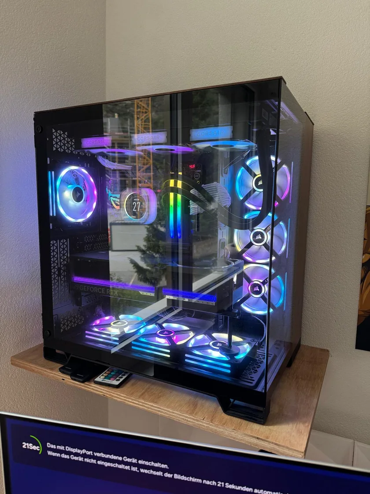

PC-Zusammenstellung & Aufbau
Sie möchten einen neuen Gaming-PC, Office-Rechner oder eine leistungsfähige Workstation? Geplant sind Unterstützung bei der Komponentenauswahl und auf Wunsch der fachgerechte Zusammenbau.
Mehr erfahren über PC-Zusammenstellung und Aufbau
Welche Programme oder Spiele laufen sollen und welches Budget Sie vorsehen, bestimmt die Wahl der Komponenten und den Umfang des Zusammenbaus.
Frage zum PC-Aufbau stellen